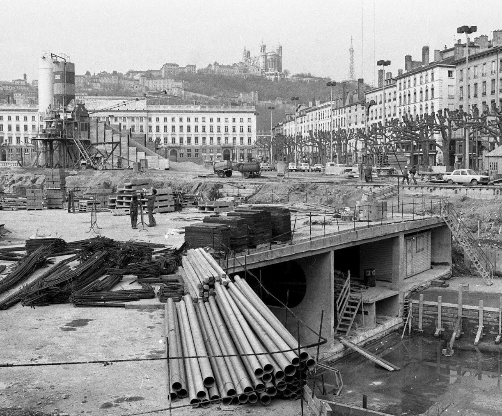
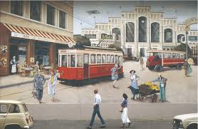
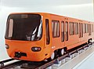
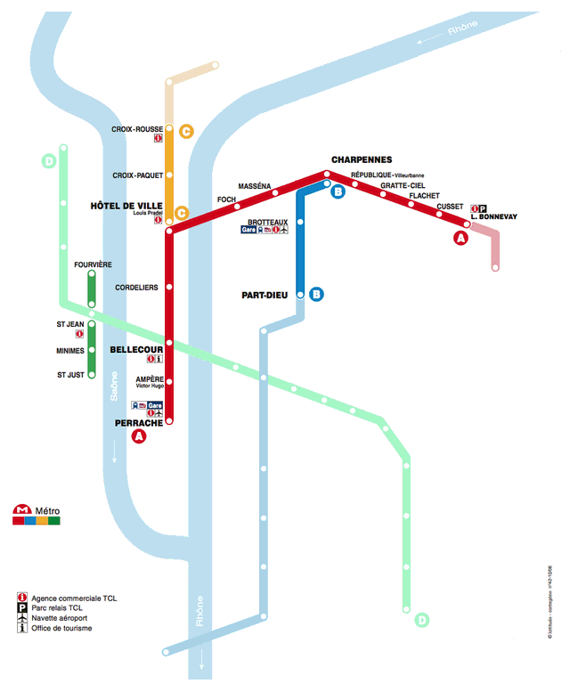

Galerie d'images

Image 1 : Chantier du métro à Bellecour en 1975 (Archives Municipales de Lyon)

Image 2 : L'ancien Tram de Lyon au XIXème siècle (Institut Lumière)

Image 3 : Maquette des MPL 75 pour (Métro Pneus Lyon) toujours utilisées sur la ligne A

Carte animée : Evolution du réseau entre 1978 et 2013 (Ferro-Lyon)